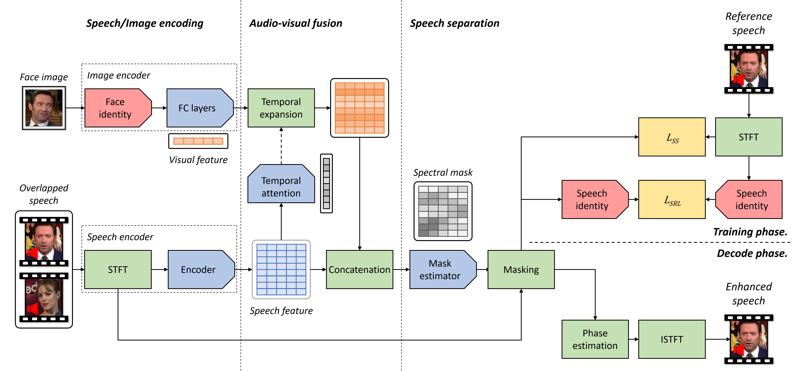

Authors
- Soo-Whan Chung, Yonsei University
- Soyeon Choe, Naver Corporation
- Joon Son Chung, Naver Corporation
- Hong-Goo Kang, Yonsei University
Abstract
The objective of this paper is to separate a target speaker's speech from a mixture of two speakers using a deep audio-visual speech separation network. Unlike previous works that used lip movement on video clips or pre-enrolled speaker information as an auxiliary conditional feature, we use a single face image of the target speaker. In this task, the conditional feature is obtained from facial appearance in cross-modal biometric task, where audio and visual identity representations are shared in latent space. Learnt identities from facial images enforce the network to isolate matched speakers and extract the voices from mixed speech. It solves the permutation problem caused by swapped channel outputs, frequently occurred in speech separation tasks. The proposed method is far more practical than video-based speech separation since user profile images are readily available on many platforms. Also, unlike speaker-aware separation methods, it is applicable on separation with unseen speakers who have never been enrolled before. We show strong qualitative and quantitative results on challenging real-world examples.
Network Configuration

In this paper, we replace the speaker identity vector with cross-modal identity embeddings extracted from face images instead of that from pre-enrolled speakers’ voices. Without having a speaker preenrollment step, we can retrieve speaker identity from a profile image in the inference stage, even for unseen speaker’s voice. The network structure that we use is similar to the one proposed in [11], but with a few changes. Description of the proposed audio-visual speech separation network. Blue blocks are trainable neural networks whereas the red blocks are networks pre-trained in cross-modal biometric task. It consists of three sub-stages such as speech/image encoding stage, audio-visual fusion stage, and speech separation stage.
Demo Samples
 Spectrogram for experimental results. There are 4 samples which are combinations of genders, where genders on the left are the targets and the right are set as interference. Each set demonstrates clean, mixed and separated speech from left to right respectively.
Spectrogram for experimental results. There are 4 samples which are combinations of genders, where genders on the left are the targets and the right are set as interference. Each set demonstrates clean, mixed and separated speech from left to right respectively.
Paper
|
S.-W. Chung, S. Choe, J. S. Chung, H.-G. Kang FaceFilter: Audio-visual speech separation using still smages [Paper] [Code] |
BibTeX
@inproceedings{chung2020facefilter,
title={FaceFilter: Audio-visual speech separation using still images},
author={Chung, Soo-Whan and Choe, Soyeon and Chung, Joon Son and Kang, Hong-Goo},
booktitle={INTERSPEECH},
year={2020}
}